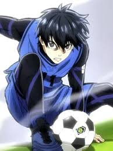
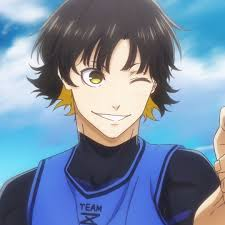
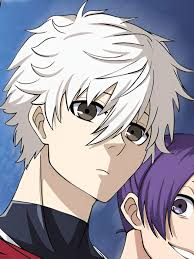
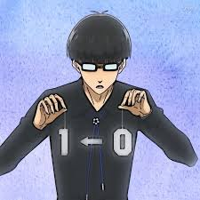

Blue Lock
Released: October 9, 2022
Genre: Sports, Drama, Psychological
Blue Lock is a high-stakes soccer anime where 300 strikers must compete in a brutal training program to create the ultimate egotistical forward for Japan’s national team.
The series follows Yoichi Isagi as he battles rivals, questions his abilities, and evolves in a survival-of-the-fittest environment.
Cast

Isagi
Voice: Kazuki Ura

Bachira
Voice: Tasuku Kaito

Nagi
Voice: Nobunaga Shimazaki

Ego
Voice: Hiroshi Kamiya